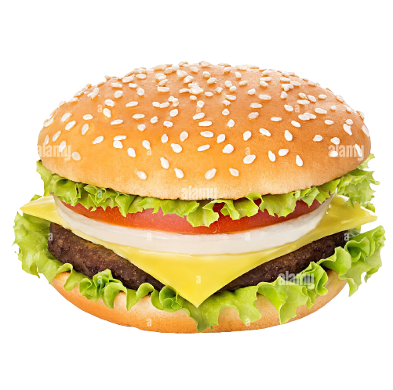
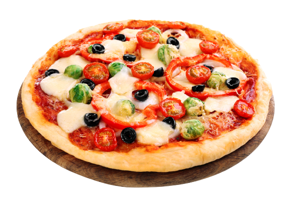
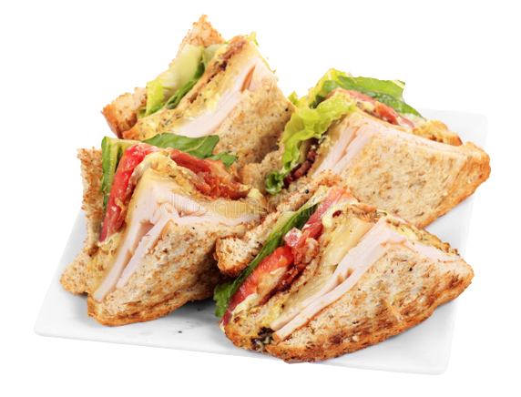
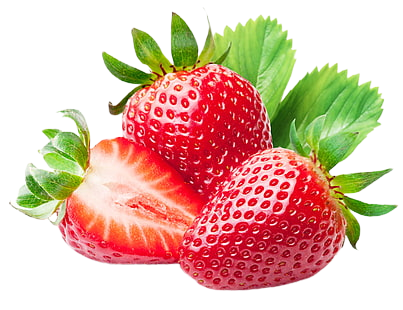
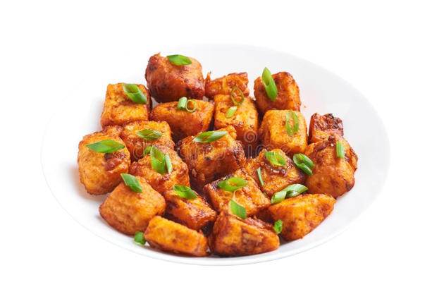
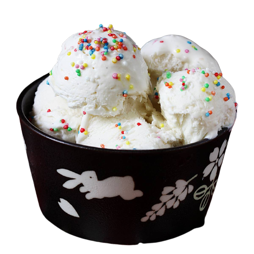
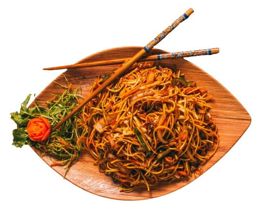
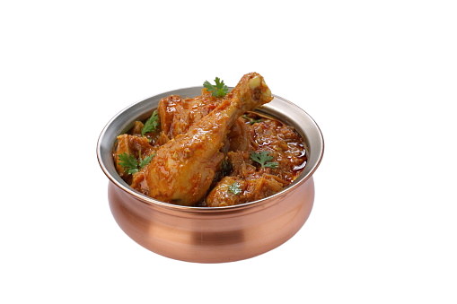
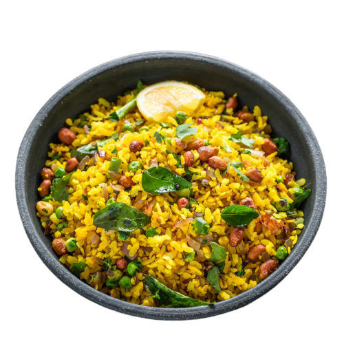

Burger
Burgers or hamburgers as they are also called are a type of fast food.
Typically, it comprises a meat patty; slices of tomato, lettuce, onion
and cheese; pickled cucumbers; and mustard, ketchup, barbeque or other
sauces sandwiched between two buns

Pizza
pizza, dish of Italian origin consisting of a flattened disk of bread
dough topped with some combination of olive oil, oregano, tomato,
olives, mozzarella or other cheese, and many other ingredients, baked
quickly—usually, in a commercial setting, using a wood-fired oven
heated to a very high temperature—and served hot.
Apple
apple, domesticated tree and fruit of the rose family, one of the most
widely cultivated tree fruits. Apples are predominantly grown for sale
as fresh fruit, though apples are also used commercially for vinegar,
juice, jelly, applesauce, and apple butter and are canned as pie
stock.

Sandwhich
A sandwich is a food prepared by placing different kinds of foods
between two pieces of bread. The pieces of bread in a sandwich are
referred to as slices or sheets of bread. Between the slices of bread,
people often add in vegetables, meat, or cheese.

Strawberry
The garden strawberry (or simply strawberry; Fragaria × ananassa) is a
widely grown hybrid species of the genus Fragaria, collectively known
as the strawberries, which are cultivated worldwide for their fruit.
The fruit is widely appreciated for its characteristic aroma, bright
red color, juicy texture, and sweetness.

Paneer
Chilli Paneer is one of the most popular recipes in Indo-Chinese
cuisine. It is simply flour or batter coated fried paneer cubes tossed
in a spicy, salty, tangy and sweet sauce made with green bell peppers,
garlic, ginger, green chillies, soy sauce and more seasonings.

Ice-crem
Ice cream is a colloidal emulsion made with water, ice, milk fat, milk
protein, sugar and air. Water and fat have the highest proportions by
weight creating an emulsion that has dispersed phase as fat globules.
The emulsion is turned into foam by incorporating air cells which are
frozen to form dispersed ice cells.

Chowmein
Chow mein is a traditional Chinese dish made with egg noodles and
stir-fried veggies. We love adding a protein and our favorite is
chicken, but you can try different meat or tofu. This dish is pan-fried
so the noodles get a nice crisp to them and then tossed in a yummy
sauce.

Chicken
Chicken tikka masala is a dish consisting of roasted marinated chicken
chunks (chicken tikka) in a spiced sauce. The sauce is usually creamy
and orange-coloured. The dish was popularised by cooks from India living
in Great Britain and is offered at restaurants around the world. Chicken
tikka masala.

Poha
A sandwich is a food prepared by placing different kinds of foods
between two pieces of bread. The pieces of bread in a sandwich are
referred to as slices or sheets of bread. Between the slices of bread,
people often add in vegetables, meat, or cheese.